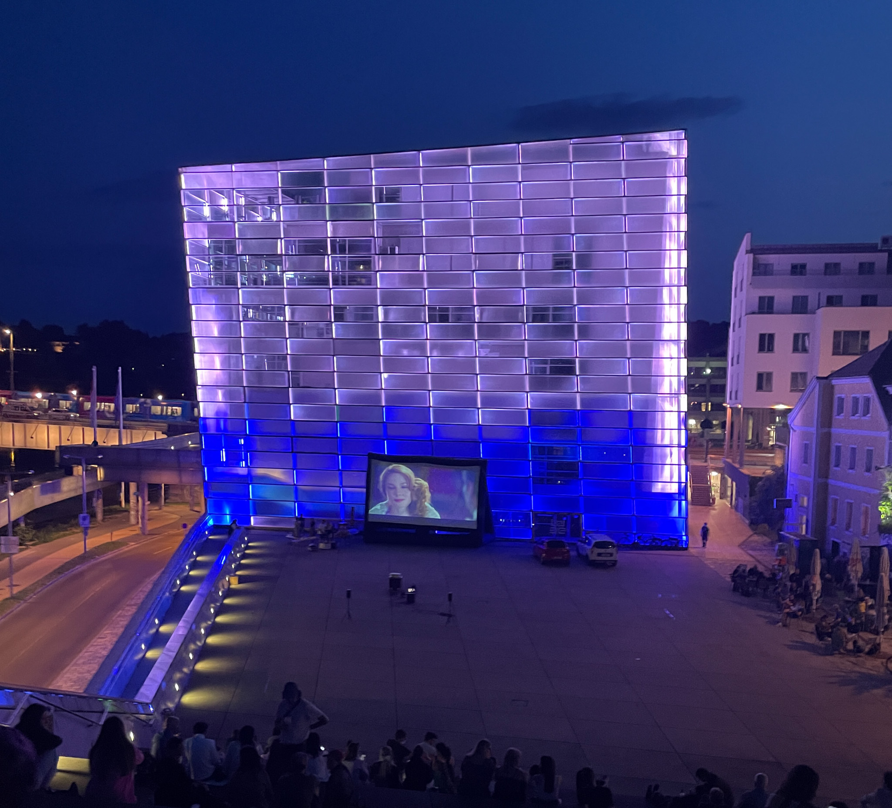
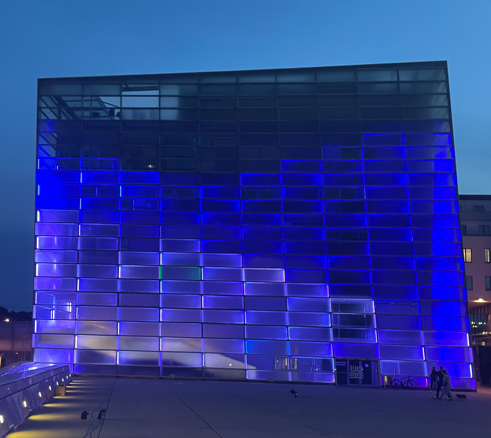
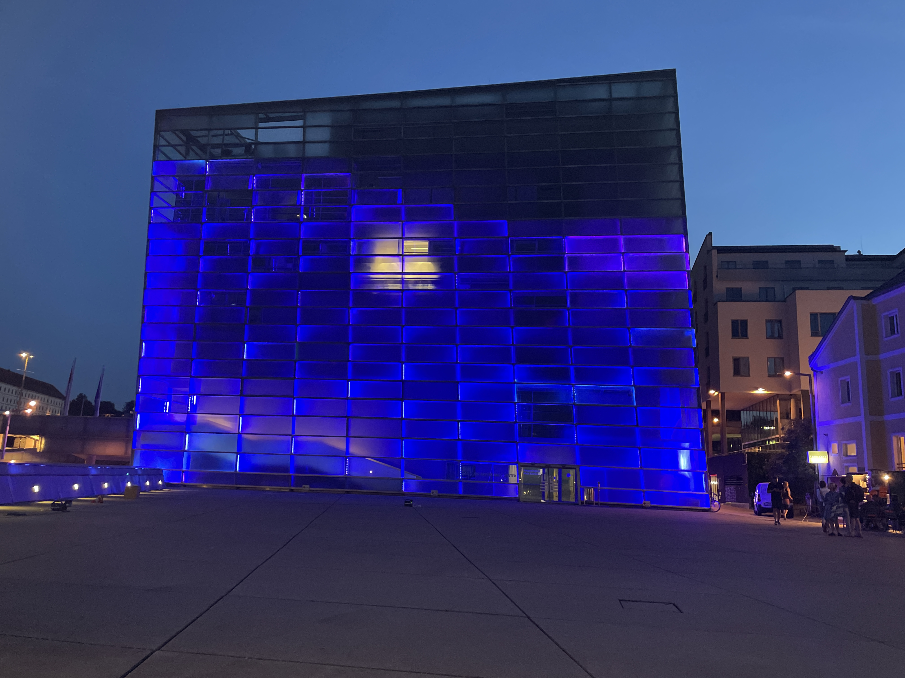

Surfs Up attempts to bridge the gap between our natural and built environment by visualizing wave data from Nazaré, Portugal, a popular big wave surfing location. With the help of the visualization the ocean is brought closer to Linz serving as a reminder of its importance to the world as a whole. The piece fades between spaced out pillars representing waves that follow mathematical calculations into smoother natural movements connecting digital world to the movements of the ocean.
While assisting the Ars Electronica FutureLab on a four day workshop helping a group of students from Northeastern University design and develop their own facade designs, I found time to put together and present my own work. I chose to keep the project within a simple scope to play with the unique spatial elements the building offers and imagine how data might be represented in the large and low-resolution environment.
Version 1
Version 2
Version 3
Version 1
Version 2
Version 3
